Home / MLP / Week 10 / Real questions
6 questions pulled from past papers whose wording matches this week's topics, newest first, duplicates removed. Pick your answers, then press Check answers. Figures and answer keys are the originals.
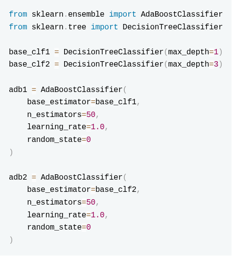
Which of the following statements are MOST accurate?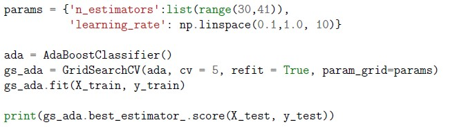
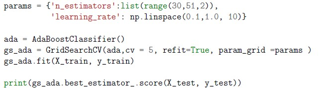
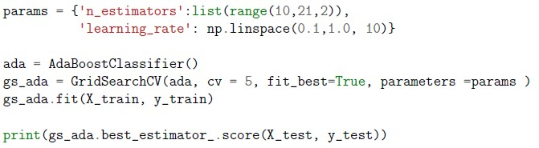
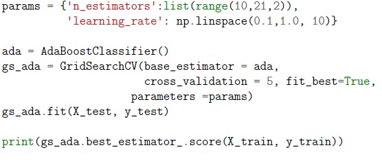
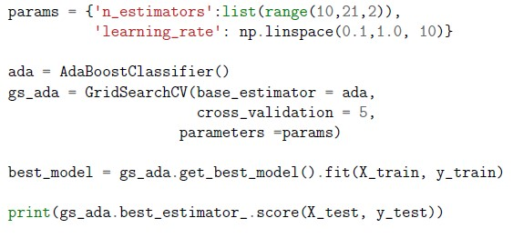
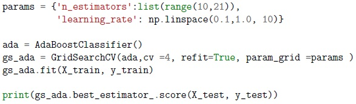
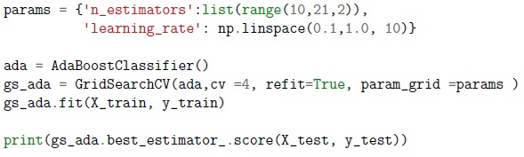
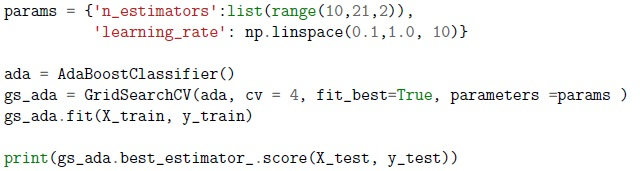
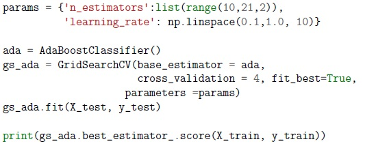
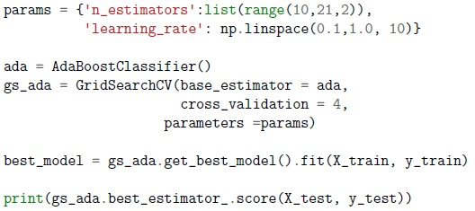